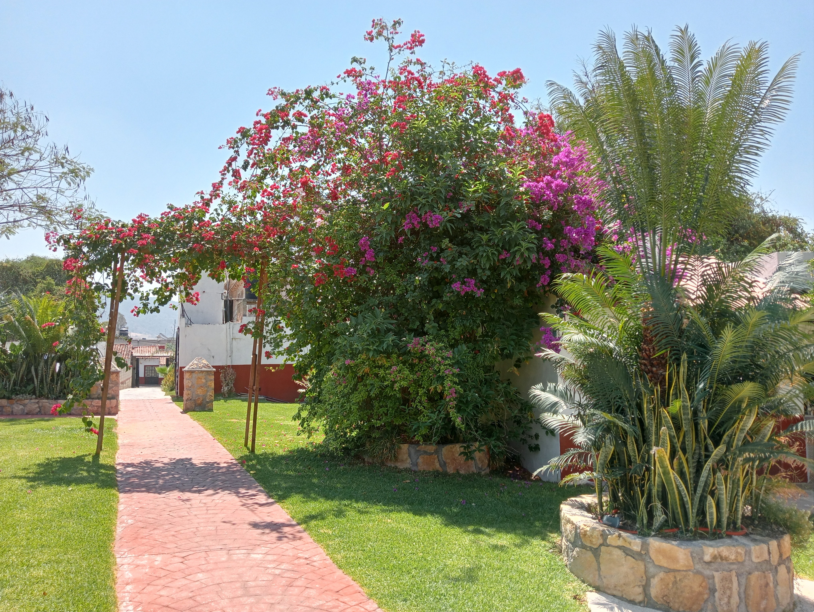

Bienvenidos a La Décima Casa
Aquí encontrarás la mejor atención en servios hoteleros, además de tener un lugar donde poder pasar las noches de estancia en el bello Pueblo Mágico de Taxco de Alarcón.
Contamos con servicios turísticos, jardín, alberca y un pequeño chapoteadero, con nosotros tendrán un 30% en las piezas de plata de 925 que se encunetran en el Mercado Platero localizado a un costado de la iglesia de Santa Prisca.
Visita nuestro bello hotel y comprueba que no hay mejor comodidad que en La Décima Casa
Le agradecemos su preferencia, tengan un excelente día

Reservaciones
Bienvenidos a La Décima Casa.
En nuestro hotel encontrarás todo tipo de comodidades, además de que también contamos con un pequeño jardín, alberca y chapoteadero.
Contamos con habitaciones de tipo:
- Sencillas: 1,550
- Doble: 1,750
- Suits: 2,500
Llama al número: 7223514499 ó contactanos por el correo: la10casa@gmail.com
Jardín
Bienvenidos al Jardín.
Este es nuestro pequeño jardín, donde usted y su familia podrán disfrutar y pasar momentos de descanso o de ocio.
Aquí encontrarás una pequeña alberca que también cuenta con un pequeño chapoteadero, además podrás quedar maravillado por las hermosas flores y plantas que hay en el jardín.

KBRA-TOURS
Bienvenidos al KBRA-TOURS.
En kbra-tours encontrarás recorridos por algunos de los lugares más llamativos de Taxco, como:
- Las Grutas de Cacahumilpa
- Las Pozas azules de Atzala
- La Mina Prehispánica de Taxco
- El Cristo Mirador